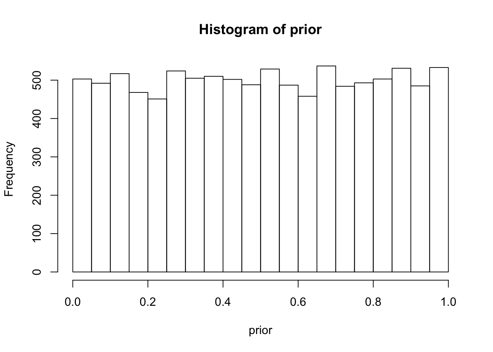
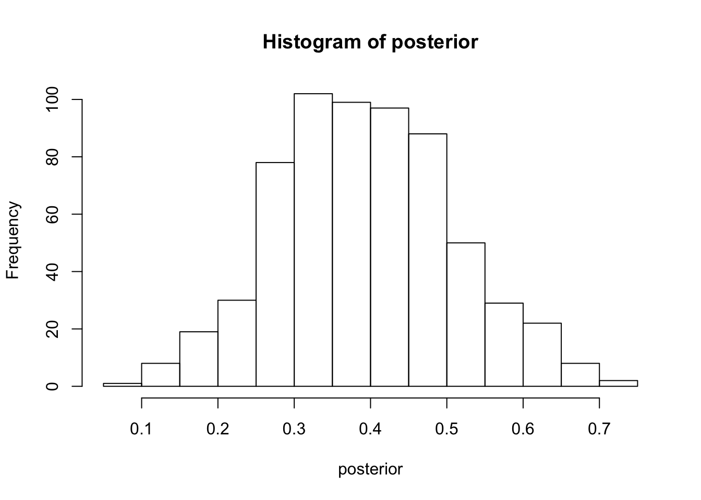
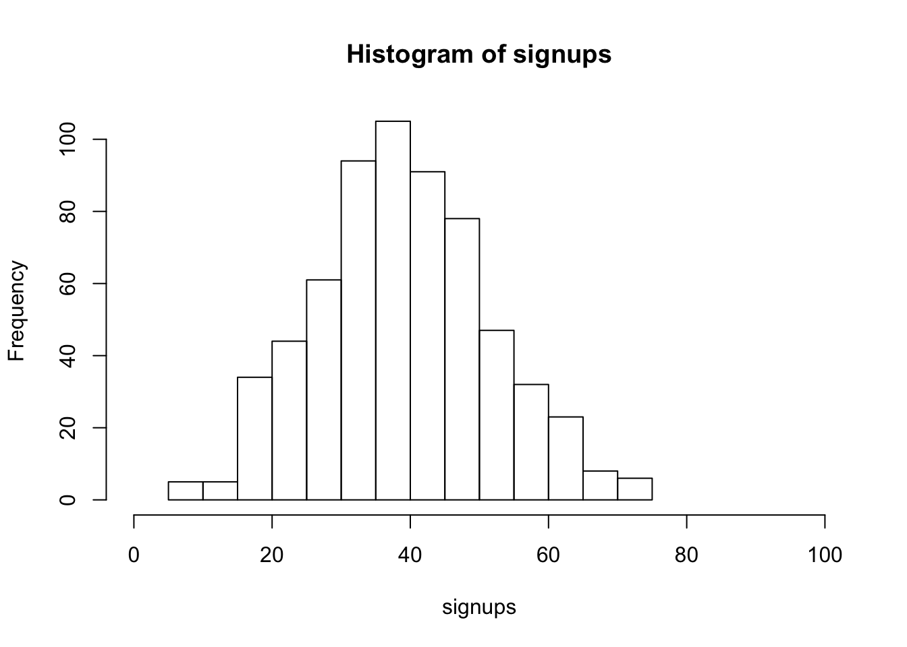
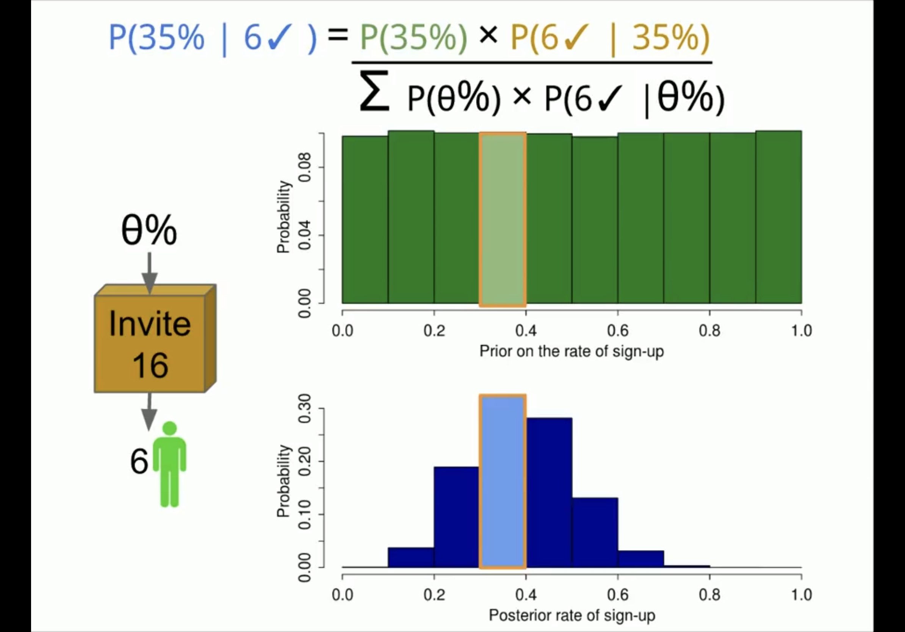
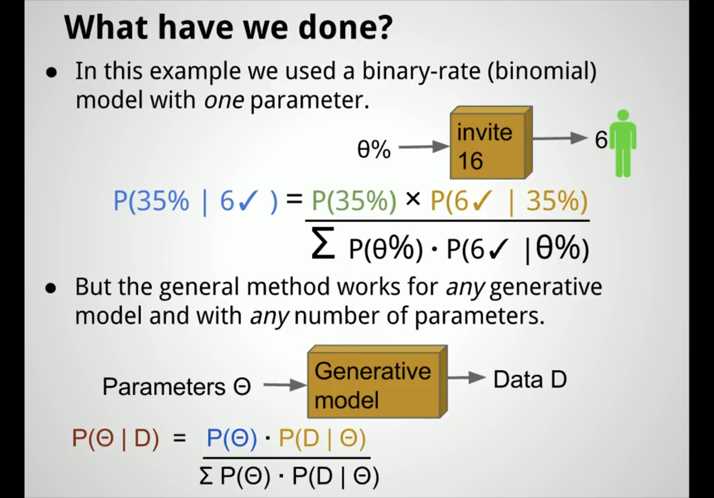

Last updated: 2019-12-20
Checks: 7 0
Knit directory: future_reference/
This reproducible R Markdown analysis was created with workflowr (version 1.5.0). The Checks tab describes the reproducibility checks that were applied when the results were created. The Past versions tab lists the development history.
Great! Since the R Markdown file has been committed to the Git repository, you know the exact version of the code that produced these results.
Great job! The global environment was empty. Objects defined in the global environment can affect the analysis in your R Markdown file in unknown ways. For reproduciblity it’s best to always run the code in an empty environment.
The command set.seed(20191220) was run prior to running the code in the R Markdown file. Setting a seed ensures that any results that rely on randomness, e.g. subsampling or permutations, are reproducible.
Great job! Recording the operating system, R version, and package versions is critical for reproducibility.
Nice! There were no cached chunks for this analysis, so you can be confident that you successfully produced the results during this run.
Great job! Using relative paths to the files within your workflowr project makes it easier to run your code on other machines.
Great! You are using Git for version control. Tracking code development and connecting the code version to the results is critical for reproducibility. The version displayed above was the version of the Git repository at the time these results were generated.
Note that you need to be careful to ensure that all relevant files for the analysis have been committed to Git prior to generating the results (you can use wflow_publish or wflow_git_commit). workflowr only checks the R Markdown file, but you know if there are other scripts or data files that it depends on. Below is the status of the Git repository when the results were generated:
Ignored files:
Ignored: .Rproj.user/
Note that any generated files, e.g. HTML, png, CSS, etc., are not included in this status report because it is ok for generated content to have uncommitted changes.
These are the previous versions of the R Markdown and HTML files. If you’ve configured a remote Git repository (see ?wflow_git_remote), click on the hyperlinks in the table below to view them.
| File | Version | Author | Date | Message |
|---|---|---|---|---|
| html | e2df405 | Jenny | 2019-12-20 | Build site. |
| Rmd | 89b229f | Jenny | 2019-12-20 | Updating webiste |
| html | bf770c2 | Jenny | 2019-12-20 | Build site. |
| Rmd | 1d7bcab | Jenny | 2019-12-20 | Updating webiste |
Tutorials: Part 1, Part 2, Part 3
Exercises 1, Exercise 2, Beginner’s Exercise
| Version | Author | Date |
|---|---|---|
| 53fa8bd | Jenny | 2019-12-20 |
Swedish Fish Incorporated is the largest Swedish company delivering fish by mail order. They are now trying to get into the lucrative Danish market by selling one year Salmon subscriptions. The marketing department have done a pilot study and tried the following marketing method:
A: Sending a mail with a colorful brochure that invites people to sign up for a one year salmon subscription.
The marketing department sent out 16 mails of type A. Six Danes that received a mail signed up for one year of salmon and marketing now wants to know, how good is method A?
#### Question 1: Build a Bayesian model that answers the question: What would the rate of sign-up be if method A was used on a larger number of people?
# Number of random draws from the prior
n_draws <- 10000
size=16
observed_data=6
prior <- runif(n_draws, 0, 1) # Here you sample n_draws draws from the prior
hist(prior) # It's always good to eyeball the prior to make sure it looks ok.
| Version | Author | Date |
|---|---|---|
| bf770c2 | Jenny | 2019-12-20 |
# Here you define the generative model
generative_model <- function(rate) {
subscribers <- rbinom(1, size = size, prob = rate)
subscribers
}
# Here you simulate data using the parameters from the prior and the
# generative model
sim_data <- rep(NA, n_draws)
for(i in 1:n_draws) {
sim_data[i] <- generative_model(prior[i])
}
# Here you filter off all draws that do not match the data.
posterior <- prior[sim_data == observed_data]
hist(posterior) # Eyeball the posterior
| Version | Author | Date |
|---|---|---|
| bf770c2 | Jenny | 2019-12-20 |
length(posterior) # See that we got enought draws left after the filtering.[1] 633 # There are no rules here, but you probably want to aim
# for >1000 draws.
# Now you can summarize the posterior, where a common summary is to take the mean
# or the median posterior, and perhaps a 95% quantile interval.
median(posterior)[1] 0.3883623quantile(posterior, c(0.025, 0.975)) 2.5% 97.5%
0.1817726 0.6227824 ### Question 2: What’s the probability that method A is better than telemarketing?
length(which(posterior>.20))/length(posterior)[1] 0.9557662### Question 3: If method A was used on 100 people what would be number of sign-ups?
signups <- rbinom(n = length(posterior), size = 100, prob = posterior)
hist(signups, xlim = c(0, 100))
| Version | Author | Date |
|---|---|---|
| bf770c2 | Jenny | 2019-12-20 |
Let’s use a sign up rate of 35% as an example and see how it change from the prior to the posterior probability: 
| Version | Author | Date |
|---|---|---|
| 53fa8bd | Jenny | 2019-12-20 |
Known as Bayes Theorem 
| Version | Author | Date |
|---|---|---|
| 53fa8bd | Jenny | 2019-12-20 |
| Version | Author | Date |
|---|---|---|
| 53fa8bd | Jenny | 2019-12-20 |
| Version | Author | Date |
|---|---|---|
| 53fa8bd | Jenny | 2019-12-20 |
sessionInfo()R version 3.6.1 (2019-07-05)
Platform: x86_64-apple-darwin15.6.0 (64-bit)
Running under: macOS Catalina 10.15.2
Matrix products: default
BLAS: /Library/Frameworks/R.framework/Versions/3.6/Resources/lib/libRblas.0.dylib
LAPACK: /Library/Frameworks/R.framework/Versions/3.6/Resources/lib/libRlapack.dylib
locale:
[1] en_US.UTF-8/en_US.UTF-8/en_US.UTF-8/C/en_US.UTF-8/en_US.UTF-8
attached base packages:
[1] stats graphics grDevices utils datasets methods base
other attached packages:
[1] workflowr_1.5.0
loaded via a namespace (and not attached):
[1] Rcpp_1.0.3 rprojroot_1.3-2 digest_0.6.23 later_0.8.0
[5] R6_2.4.1 backports_1.1.5 git2r_0.26.1 magrittr_1.5
[9] evaluate_0.14 stringi_1.4.3 rlang_0.4.2 fs_1.3.1
[13] promises_1.0.1 whisker_0.4 rmarkdown_2.0 tools_3.6.1
[17] stringr_1.4.0 glue_1.3.1 httpuv_1.5.2 xfun_0.11
[21] yaml_2.2.0 compiler_3.6.1 htmltools_0.4.0 knitr_1.26